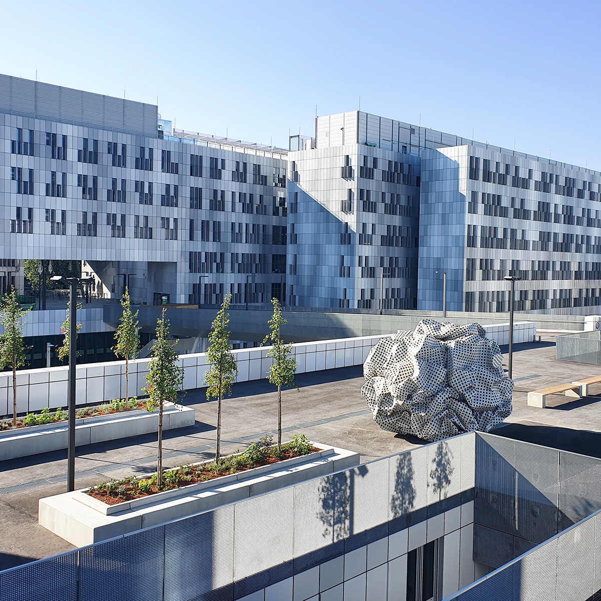

Matvii Mykhailichenko
Diagnostics Bioinformatician
I am a diagnostics bioinformatician at the Medical University of Graz, Institute for Human Genetics. My work focuses on developing and implementing computational solutions for genetic diagnostics and research.
Additionally, I am dedicated to advancing Ukrainian bioinformatics through the Bioinformatics for Ukraine society, working to build bridges between Ukrainian scientists and the international research community.

I am offering free mentoring sessions for Ukrainians interested in bioinformatics. If you would like to schedule a session, please reach out to me via email.